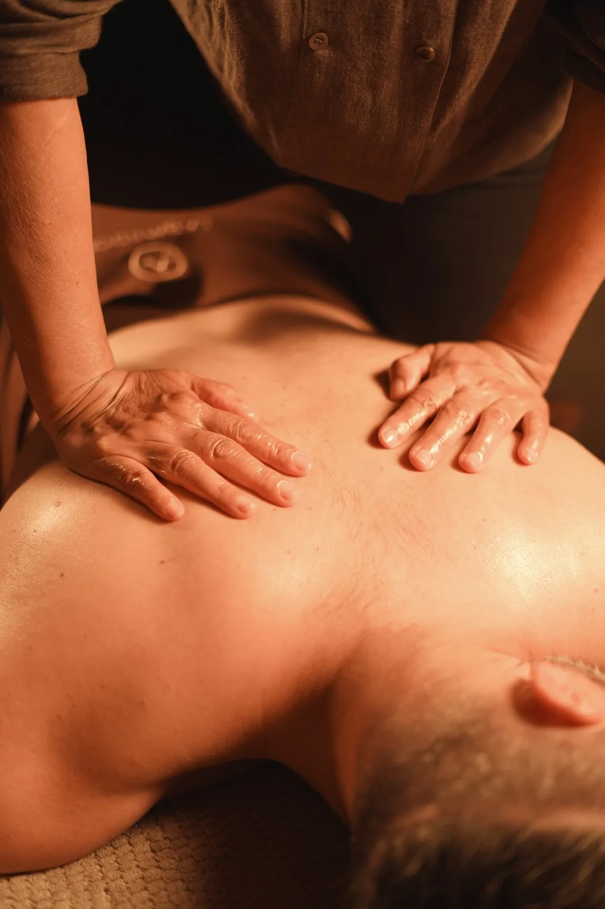
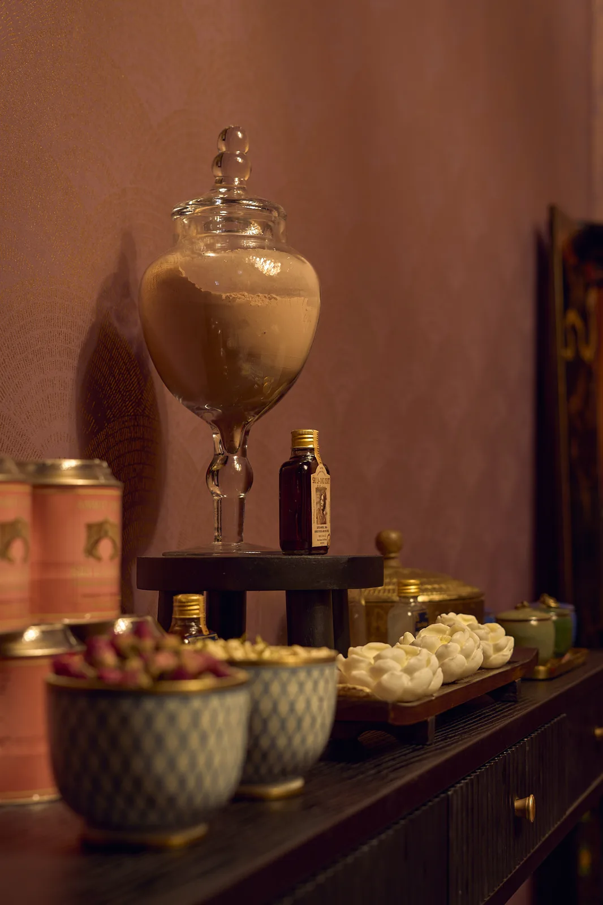

Des techniques inspirées du patrimoine thaïlandais.

BAAN D’OR · MONTRÉAL
À propos de Baan d’Or
L’hospitalité thaïlandaise, le raffinement contemporain et l’art de prendre soin de soi.
Découvrir nos soins →
NOTRE HÉRITAGE
De la Thaïlande à Montréal
Baan d’Or est né du désir de faire découvrir les traditions du massage thaïlandais dans un lieu où le soin et l’accueil occupent une place essentielle. À Montréal, nous avons imaginé une parenthèse qui conjugue gestes ancestraux, attention personnalisée et élégance contemporaine.
Notre ambition : vous offrir le temps de ralentir, de retrouver votre confort et de renouer avec votre corps.
UN SYMBOLE, UNE INTENTION
La feuille de Bodhi
Évocation de sagesse, d’équilibre et de paix intérieure, la feuille de Bodhi inspire notre univers. Elle rappelle l’importance de la présence et de la douceur dans chaque moment passé chez Baan d’Or.

NOTRE PHILOSOPHIE
Cinq convictions, une même attention
Un soin adapté à votre confort et à vos préférences.
Des gestes précis et une pratique professionnelle.
Un temps pour le corps et l’esprit.
Un accueil généreux, du premier instant au dernier thé.
L’EXPÉRIENCE BAAN D’OR
L’art de vous accueillir
Inclus avec chaque soin, notre rituel d’accueil transforme votre visite en une expérience à part entière.

Une boisson de bienvenue
Prenez le temps de vous installer.

Le rituel des pieds
Bain chaud et gommage aux herbes thaïlandaises.

Votre soin
Une séance adaptée à votre confort.

Un dernier moment de douceur
Thé aux herbes et collation thaïlandaise.
Rencontrez nos thérapeutes
Découvrez notre équipe et choisissez votre thérapeute pour votre prochaine visite.
Notre équipe →
MONTRÉAL · SAINT-PATRICK
Un sanctuaire au cœur de la ville
Des lumières dorées aux matières chaleureuses, chaque détail de notre spa invite à la détente. Retrouvez-nous au 2602, rue Saint-Patrick, à Montréal.
Préparer ma visite →Questions fréquentes
Que comprend le rituel d’accueil ?
Une boisson, un bain de pieds chaud, un gommage aux herbes, puis un thé et une collation après le soin.
Puis-je choisir mon thérapeute ?
Consultez les disponibilités sur Fresha lors de votre réservation.
Où se trouve Baan d’Or ?
Au 2602, rue Saint-Patrick, à Montréal, Québec.
Puis-je adapter la pression du massage ?
Indiquez vos préférences à votre thérapeute avant et pendant le soin.
Votre parenthèse commence ici
Découvrez nos rituels et choisissez celui qui vous ressemble.
Réserver maintenant →